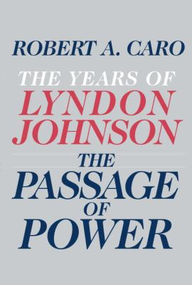

"The Passage of Power"
- Read on 2024-04-15
- Rating: ️️️️️
- Format: 🎧 (32 hours 45 minutes)
Short version: these books continue to be a mixed bag. The writing is truly top-notch. Johnson himself has some reprehensible characteristics, and yet also in this book shows some of the things he is (and should be) commended for - specifically around civil rights. This book covered Johnson's years as Vice President, and the beginning of his Presidency - thee passage of power from Kennedy to Johnson, and maintaining continuity for the government.
Longer version: Nobody else did for civil rights what Johnson did, and arguably, he did at the time what nobody else could have done. His insight into the legislative process, and riding the wave of his transition into the Presidency, combined to make him the perfect person to make things happen. Kudos to him for that. But also, Robert F Kennedy said, "[Lyndon Johnson] does not know how to use people's talents to find the very best in them and put the best to work, but more than any other man he knows how to ferret out and use people's weaknesses." His cruelty can frequently be on display. His abuse of his government positions for self-enriching methods were as well. And his lack of fealty to his wife is truly troubling.
Robert A. Caro is a fantastic writer. These books have been completely engrossing. Without question, five out of five stars for the writing. I would love for every biographer to be as thorough, well-balanced, and to give as much context as Caro does. I join so many others, in hoping for the successful completion of this series by Caro.
- Prior: Master of the Senate
- Next: How to Talk to Anyone